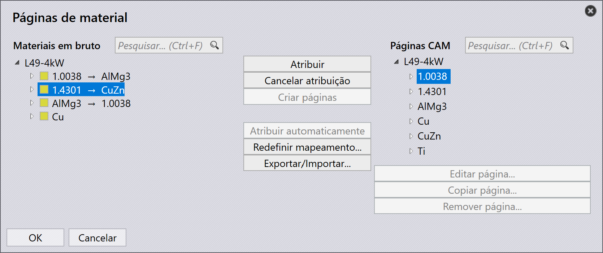

Mapear páginas CAM
Vá para fábrica → chapas → Mapear → Páginas CAM. A tela Páginas de material aparece.
-
Os Raw materials com páginas CAM mapeadas são exibidos em VERDE, os parcialmente mapeados ou com páginas CAM ausentes em AMARELO, e os Raw materials não mapeados em VERMELHO.
-
Atribuir automaticamente: Ao mapear a espessura do Raw material em relação a várias páginas LTT da mesma espessura, o sistema mapeia para a primeira LTT correspondente; aqui, Copper-15 (espessura 1.5) mapeia para a primeira LTT 1.5 [C0015MD0-N2S0-30-2].
-
Atribuir: Selecione Copper-15 e clique em Cancelar atribuição. Em seguida, escolha LTT 1.5 [C0015MD0-O2S0-30-2].
-
Se a espessura correta da LTT não for encontrada, o Raw material é sinalizado em VERMELHO. O usuário deve mapear manualmente Copper-12 (espessura 1.2) para a espessura LTT correspondente 1.3 [CO013MD0-O2S0-30-2].
| Antes de adicionar peças à biblioteca de peças, certifique-se de que as páginas CAM estejam mapeadas para todos os Raw materials. |
